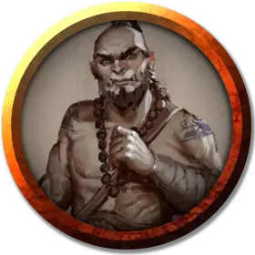

Западный ветер
West Wind
Средний Гуманоид (Любая раса), любое мировоззрение, именной НИП

Класс Доспеха 16
Хиты 60 (11к8 + 11)
Скорость 40 футов
| мод | спас | ||
|---|---|---|---|
| СИЛ | 11 | +0 | +0 |
| ЛОВ | 17 | +3 | +3 |
| ТЕЛ | 13 | +1 | +1 |
| мод | спас | ||
|---|---|---|---|
| ИНТ | 11 | +0 | +0 |
| МДР | 16 | +3 | +3 |
| ХАР | 10 | +0 | +0 |
Навыки Акробатика +5, Проницательность +5, Скрытность +5
Чувства пассивное Восприятие 13
Языки один любой язык (обычно Общий)
Опасность 3 (700 опыта)
Бонус мастерства +2
Среда обитания Город
Особенности
Защита без доспехов. Пока ветер не носит ни доспехи, ни щит, к КД прибавляется его модификатор Мудрости.
Действия
Мультиатака. Западный ветер совершает три безоружных удара или три атаки дротиком.
Безоружный удар. Рукопашная атака оружием: +5 к попаданию, досягаемость 5 футов, одна цель. Попадание: 7 (1к8 + 3) дробящего урона. Если цель является существом, адепт может выбрать один из следующих дополнительных эффектов:
• Цель должна преуспеть в спасброске Силы Сл 13, а иначе роняет один носимый предмет на выбор адепта.
• Цель должна преуспеть в спасброске Ловкости Сл 13 или будет сбита с ног.
• Цель должна преуспеть в спасброске Телосложения Сл 13, или станет ошеломлённой до конца следующего хода адепта.
Дротик. Дальнобойная атака оружием: +5 к попаданию, дистанция 20/60 футов, одна цель. Попадание: (1к4 + 3) колющего урона.
Клинок Медузы [blade of the Medusa]. Рукопашная атака оружием : +5 к поражению, досягаемость 5 футов, одна цель. Попадание: 7 (1к8 + 3) колющего урона. Если при броске атаки Восточный ветер выбрасывает "20", цель должна совершить спасбросок Телосложения Сл 15, иначе пострадает от эффекта заклинания окаменение [flesh to stone].
Реакции
Отражение снарядов. В ответ на попадание по нему атакой дальнобойным оружием, ветер отражает снаряд. Урон от этой атаки уменьшается на 1к10 + 3. Если урон уменьшился до 0, ветер поймал снаряд, если он достаточно мал, чтобы держать его одной рукой, и у ветра есть свободная рука.